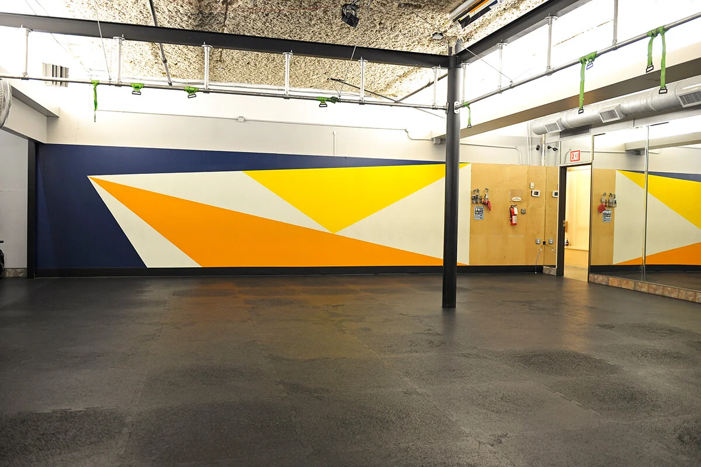
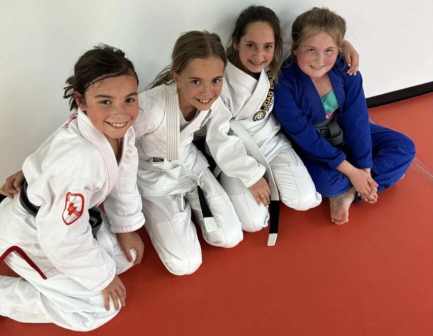
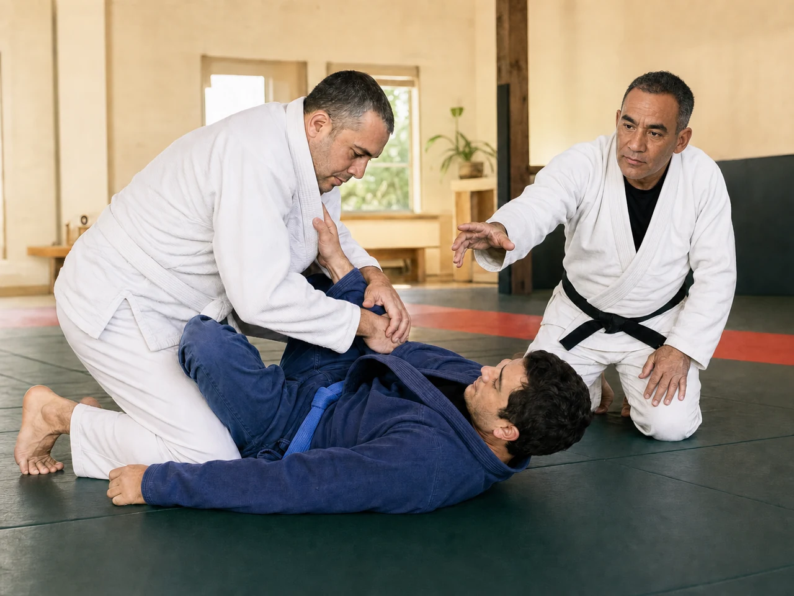

Joao personally calls to recommend a class and schedule a free studio visit. Observe or participate. The quiz does not book automatically.

Castle Hill Fitness Downtown · Official facility photo
A clear starting point in Austin
Two programs. One place to begin.
Choose who you are looking for in the finder. We will show the relevant questions, with contact details last.
Youth ages 8–12

Confidence through practice.
Tue/Thu 5:00–5:45 p.m.
Tap means stop. Children practice a shared stop signal, listening to a partner, body control, and trying again with coaching. Confidence is practiced, not promised.
For beginners and children with experience. This Austin group is for ages 8–12 only.
Adults

New to jiu-jitsu? Start here.
Tue/Thu 6:00–7:00 p.m.
Practice calm under pressure. Learn position, timing, and technical responses through coached repetitions. There is room to ask questions and be a beginner.
Prefer focused individual coaching? Adult private lessons are available by appointment.
Your answers help Joao recommend the next step. Contact details come last.
Joao founded his academy in 2003. His Carlson Gracie and Ricardo De La Riva lineages inform an approach grounded in position, timing, efficiency, and control.
For children and adults, the next step starts with your experience and goals. Joao personally calls to recommend a class and arrange a free studio visit.
Your Austin schedule
Make room for your first class.
Inside Castle Hill Fitness, 1112 N Lamar Blvd, Austin TX 78703. Adult private lessons are by appointment, not recurring calendar slots.
No experience is required. Joao can help you choose a starting point.
What happens after the quiz?
Joao personally calls to recommend a class and schedule a free studio visit. You or your child may observe or participate. No appointment is booked automatically.
What if my child is outside ages 8–12?
This Austin Youth group is for ages 8–12 only. The quiz will stop this path and link to other program options. It does not place younger children or teens in this class.
Your next step
Your first step starts here.
Choose child or adult, answer a few practical questions, then share your contact details for Joao’s personal call. Free studio visit. Observe or participate.